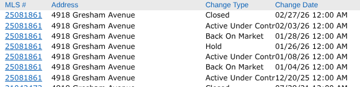
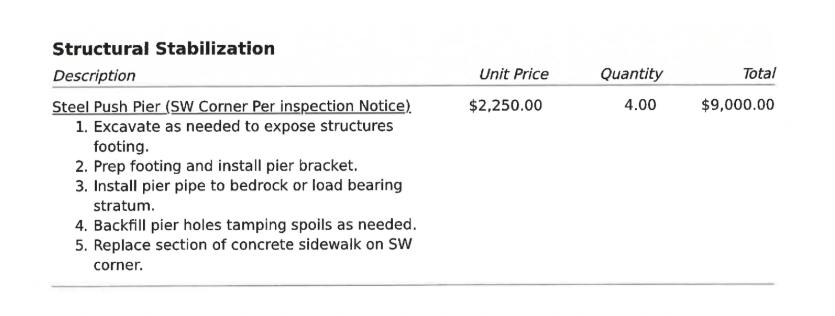
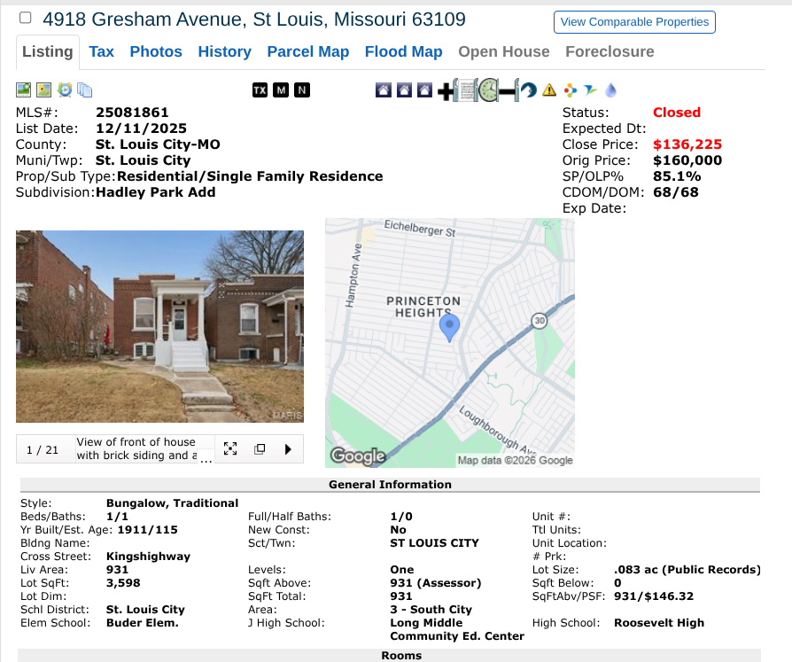

STL Home Buyer Journey
George Kindler
13 Years Of Real Estate Experience At Your Fingertips
A one bedroom home in St. Louis City. Ninety-plus days on market. Two failed contracts. Roof and foundation issues that nobody disclosed upfront. And a seller who eventually offered a $30,000 price reduction before my buyer ever performed a single inspection. Here is exactly how it happened -- and what you can take from it into your own search.
Watch the full breakdown on YouTube — includes the listing red flag I spotted before ever walking in.
My buyer was in Colorado. He called me and said he was interested in a property in St. Louis City near Christie Park -- south Kings Highway area, one bedroom, one bath. I told him I could go look at it the next day. Before I ever walked through the front door, I pulled the listing and the comparable sales.
The listing described the home as worth $180,000 based on neighborhood comps, and it was priced at $160,000. The implication was obvious -- the seller believed they were offering a deal. When I ran the actual comps, the picture looked different. The home was worth $160,000. Not $180,000. The reason is a buyer pool problem that most listings do not explain.
This is the kind of analysis that happens before an offer is written -- not after. The listing agent had priced based on what the seller wanted to believe, not what the market would support for that specific property type. That gap between seller belief and market reality is exactly the condition that creates negotiating opportunity.
The same overvaluation problem shows up in Zestimates across St. Louis. Here is how far off they run -- and why. Is the Zillow Zestimate Accurate in St. Louis? → → Pulling comps before an offer, reading buyer pool dynamics, identifying listing red flags -- this is what a prepared buyer's agent actually does. What a Buyer's Agent Actually Does in St. Louis → →
MLS listing history showing DOM, status changes, and prior contract activity. Each status change within 3–4 days indicates the prior buyers went under contract at asking price -- then pulled out when inspections uncovered the roof and foundation issues.
After ninety-plus days on the market, this property had been under contract twice. Both buyers walked. Here is what happened.
The first inspection was performed when there was snow on the roof. The inspector could not access the roof surface to evaluate its condition. The foundation was identified as an issue and the buyer walked on that alone.
The second inspection happened with no snow on the roof. The inspector now had full access and identified both issues -- the roof and the foundation. That buyer also walked.
We go under contract at $160,000. Days later -- before any inspection is ordered -- the seller's agent calls and offers a $30,000 price reduction. The seller was done.
My buyer closes at the reduced price with full knowledge of the roof and foundation conditions, repair bids in hand, and equity in the deal from day one.

Repair bids obtained after contract execution. These numbers gave my buyer the factual basis to understand the actual cost gap between the $160,000 list price and the $30,000 reduction -- and confirmed equity in the deal even after repairs.
To understand why the seller offered $30,000 off before inspections even started, you have to understand what the market had been telling them for three months.
Every time this property went under contract, it happened within three to four days of listing or relisting. That is actually a positive signal -- it means buyers were seeing the price and agreeing it was fair at $160,000. The market was not rejecting the price. The market was rejecting the conditions. Twice.
The seller had mentally priced this home at $185,000 and believed that after repairs there would still be equity. The market disagreed. No buyer was willing to absorb both the purchase price and the repair costs at $160,000. When my buyer came along -- the third contract in -- the seller recognized that another failed inspection would mean another restart, more days on market, and the same outcome. The offer of a $30,000 reduction was the seller doing the math and deciding the deal in hand was worth more than the deal they were holding out for.
That is seller exhaustion. It is not something you manufacture with a negotiation tactic. It is something you recognize and position yourself to benefit from.

This deal closed. My buyer purchased a St. Louis City home at a $30,000 reduction from list price before inspections were ordered, with full knowledge of the repair conditions and bids in hand.
Not every seller on the market is in this position. But there are more of them than most buyers realize -- because most buyers are not looking where these deals actually live.
The biggest mistake St. Louis buyers make is filtering exclusively for new listings. A seller on day one has no reason to negotiate -- they want to see how the market responds. A seller on day sixty has already seen how the market responded. That is a completely different conversation.
Buyers and agents underestimate how quickly buyers recognize overpricing. An overpriced home sits because almost no one walks through it. That reduced competition is the point. You can walk an overpriced home with zero other buyers making offers and negotiate from a position that simply does not exist on a correctly-priced new listing.
If you treat every home you walk as something you will need to sell in five to seven years, your inspection priorities change, your emotional detachment holds, and your leverage increases. Buyers who fall in love with a house on the first showing negotiate from weakness. Buyers who evaluate it as a future resale negotiate from information.
St. Louis homes are averaging around 48 days on market as of early 2026. That is up from prior years and it means the pool of exhausted sellers is larger than it has been since before the pandemic. The frenzied conditions that made every home a bidding war are behind us. Overpriced listings are sitting. Homes with condition issues are sitting longer. Sellers who have watched two or three buyers walk are starting to do the math.
The buyers winning in this environment are not the ones writing the highest offers on new listings. They are the ones patient enough to let the market do the work -- and prepared enough to act when a seller is ready to make a deal.
The tools to identify these properties exist. The first weekend rate data in the STL Home Journey shows you which neighborhoods have homes going under contract immediately and which ones have inventory sitting. A home that has been on the market for 60 to 90 days in a neighborhood where the average is 20 days is telling you something. The question is whether you are reading it.
The post-NAR settlement landscape changed how buyer representation and negotiation work in St. Louis. Here is what it means for your offer. What the NAR Settlement Changed for St. Louis Buyers → → How to translate inspection findings and repair bids into an actual offer number. How Repair Costs Should Affect Your Offer Price in St. Louis → → What to look for on a walkthrough so you are not surprised after contract. St. Louis Home Walkthrough Checklist → → What actually happens at a home inspection and what to do with the results. What Happens at a Home Inspection in St. Louis → → The agent who did not disclose prior inspection reports before we wrote our offer. Here is what that pattern looks like. Red Flags: Bad Buyer Agent Behavior in St. Louis → →Is a $30,000 price reduction realistic in the St. Louis market right now?
On a correctly priced, move-in ready home that just listed -- no. On a home with known condition issues that has been on the market for 60 to 90 days with failed prior contracts -- yes. The conditions have to align. This case study is not a negotiation script, it is an example of what becomes possible when you are looking at the right type of property.
Should I be worried about buying a home with roof and foundation issues?
Not automatically. The question is whether the price accounts for the cost of repairs and whether you have verified bids before you close. My buyer knew exactly what the roof and foundation issues would cost before closing. The $30,000 reduction created space in the deal to address those repairs and still have equity in the home. What you want to avoid is buying a home with unknown issues at a price that assumes no issues exist.
How do I find homes in St. Louis that have been sitting on the market?
Any agent with MARIS access can filter by days on market. You can also watch listings on Zillow or Redfin -- a home that was listed 60 to 90 days ago and is still active is the profile you are looking for. Pay attention to status changes too. A home that went pending and came back active has a story worth understanding before you write it off.
Does a one bedroom home appreciate differently than a two bedroom in St. Louis?
Generally yes, and the gap matters for resale. The buyer pool for a one bedroom is narrower -- fewer families, fewer conventional financing options in some cases, and fewer comparable sales to support a higher price. If you are buying a one bedroom as an investment or as a starter home with a clear plan, it can make sense. If you are comparing it to a two bedroom in the same neighborhood as though they are equivalent, you are using the wrong comps.
This is one piece of the St. Louis home buying process. See how it all fits together:
📚 Complete St. Louis Buyer Guide →
Grew up in South St. Louis, lived in Dogtown for 6 years, now in South County. You'll find us at White Flag Church on Sundays. This is my city, and I know it well.
Seeing a home in St. Louis that has been sitting? I can pull the full listing history, prior contract activity, and comp analysis before you write a single number. Call or text direct.